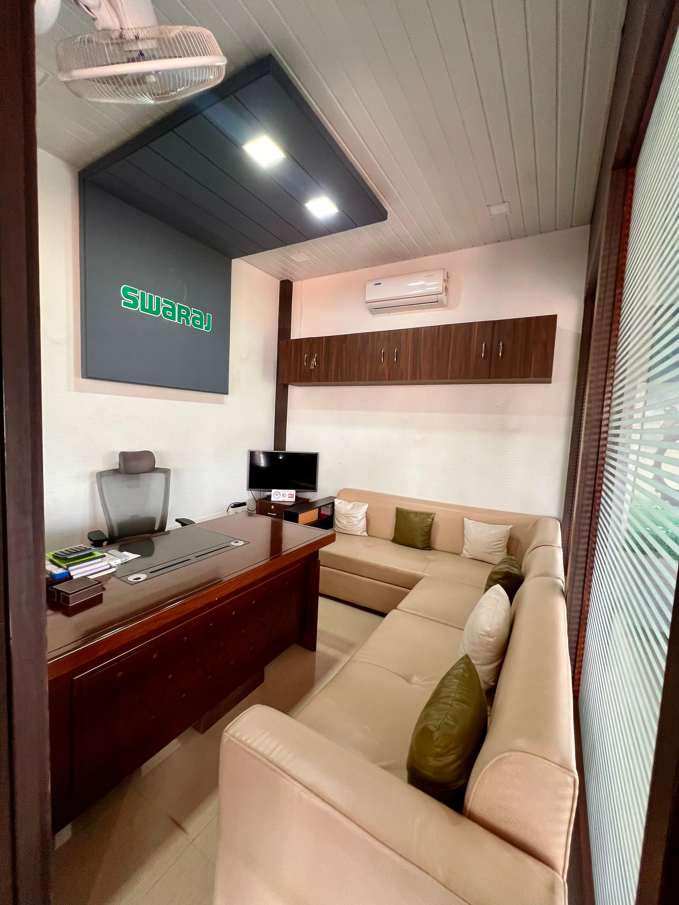
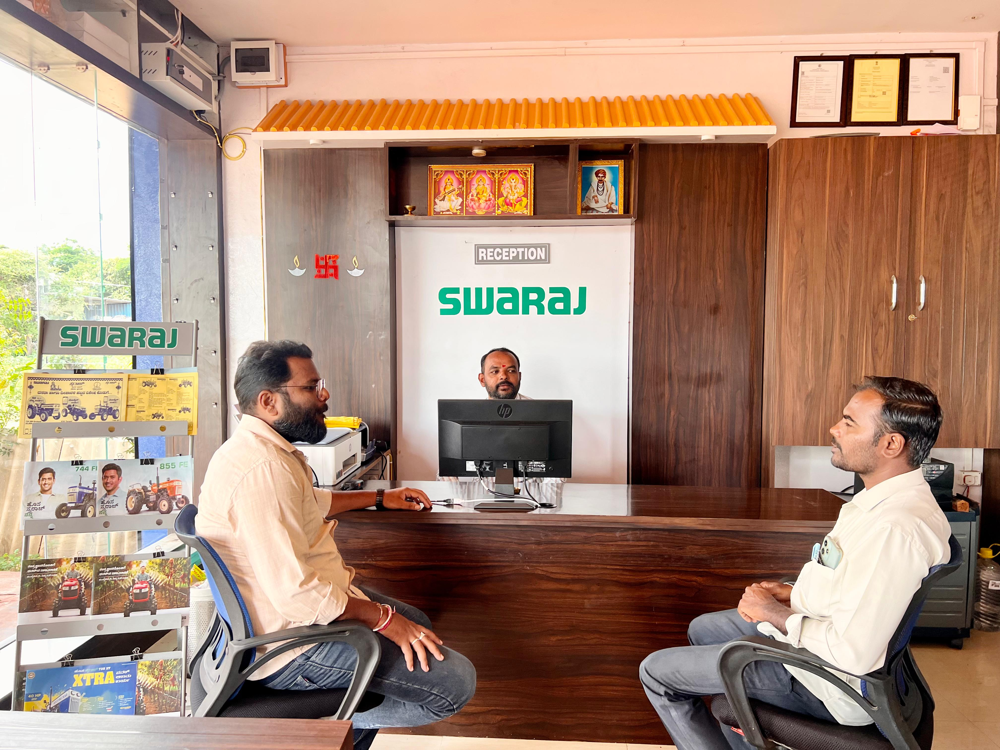
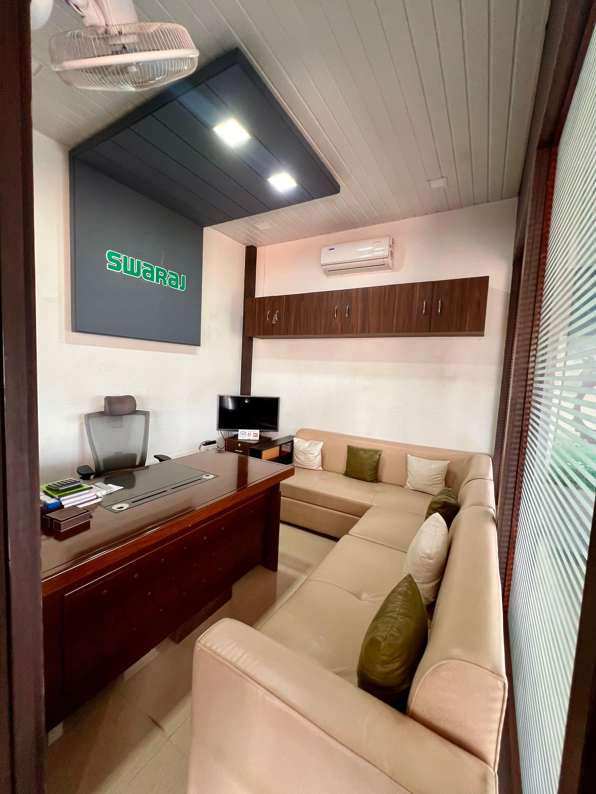
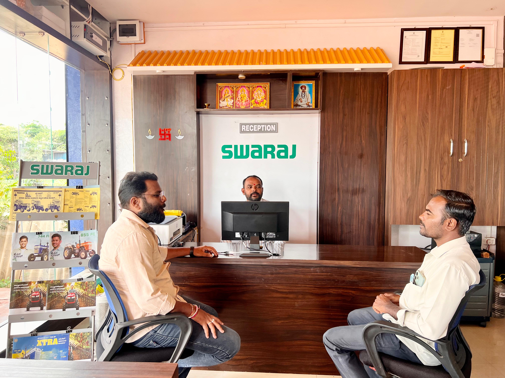

About Swaraj
Swaraj is more than a brand; it's a mission dedicated to enhancing the lives of Indian farmers. Our stakeholders, dealers, partners, customers, and employees are all united by a passionate commitment to our purpose. Over the past five decades, we have ruled the hearts of Indian farming community, a testament to the satisfaction we bring to our community and society. Our success is fuelled by our team's determination to continually push the boundaries and go the extra mile in serving those who rely on us. Join us on this journey of empowerment and impact with Swaraj. Josh ka Raaz Mera Swaraj.
Shivashanta Motor's Showroom
 



Welcome to our showroom! We offer a wide range of tractors and farm equipment to meet your needs. Our showroom is designed to provide you with the best experience while selecting your next tractor.
Shivashanta Motor's Service Center
Our service center is equipped with genunie spare parts to ensure that your tractors and equipment are maintained and repaired to the highest standards. Our skilled technicians are here to help with any service needs.
Swaraj Story
Watch our video to learn more about our history, mission, and the team behind GreenTractor.